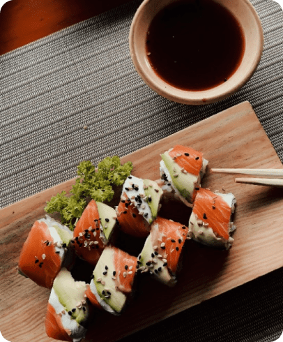
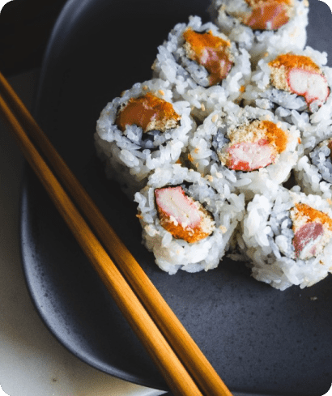
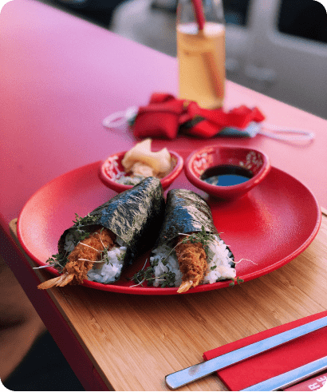
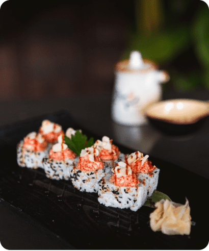
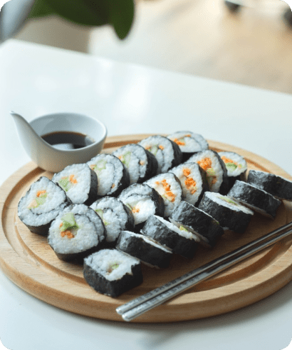
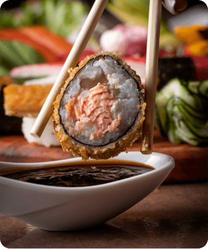
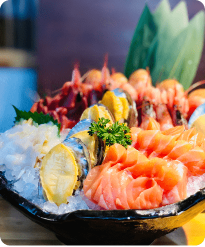
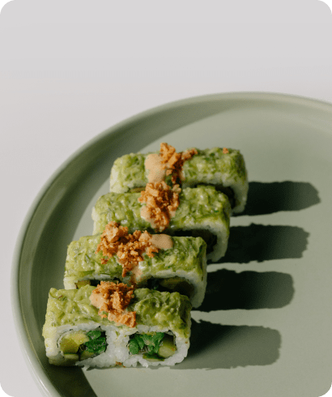
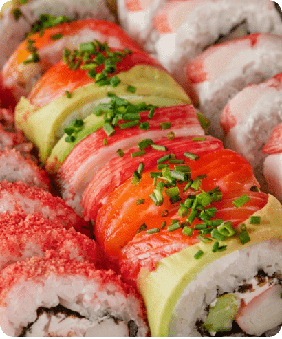

Суші Хаус
ВІДЧУЙТЕ НЕПОВТОРНИЙ СМАК ОКЕАНУ
Популярне
-
Нігірі
Маленькі рисові кульки з рибою, молюсками тощо зверху. Існує незліченна кількість різновидів нігірізуші, деякі з найпоширеніші - з тунцем, креветками, вугром, кальмари, восьминоги та смажене яйце.
780650 -

Футомакі
Рис для суші, морепродукти і т.д., загорнуті в сушені водорості листами. Існує незліченна кількість різновидів суші-ролів що відрізняються інгредієнтами та товщиною. Суші роли приготовані "навиворіт", дуже популярні за межами Японії, але рідко зустрічаються в самій Японії.
880770
Вітаємо у Суші Хаус
Перш за все, я шеф-кухар, чи то за плитою в одному з моїх ресторанів у Північній Каліфорнії, чи останні 15 років перед камерою в моїх кулінарних шоу на Food Network. Я створюю нові страви та смакові і смакових поєднань, які приносять задоволення кухарям і гостям наших ресторанів, - це моя робота, і я люблю її.
R. Tyler Florence
Меню
-

Хамагурі
-

Макі
-

Темакі
-

Урамакі
-

Футомакі
-

Інарісуші
-

Чірашізуші
-

Хосомакі
-

Кольорові суші сет
- Переглянути повне меню
Історія
Шеф-кухар суші: Кійокава
Після майже 20 років в Місті Ангелів суші-шеф Сатоші Кійокава став одним з головних гравців на суші-сцені Лос-Анджелеса з-за прилавка свого ресторану "Go By Kiyokawa" на Беверлі-Хіллз. Кійокава черпає натхнення з простих речей у житті, але його їжа не є чимось звичайним. Стиль Кійокави, що спирається на його виховання в японському місті Кобе, глибоко вкорінений у традиційні японські звичаї, а саме глибоко вкорінений у традиційних японських практиках. Використовуючи власну творчість, він створив справді унікальний досвід: такі страви, як його "копчений" лосось нігірі та вирізблені вручну чаші для льоду, завоювали йому вірних прихильників серед жителів Лос-Анджелеса. Зосереджуючись на унікальній презентації та використовуючи рибу найвищої якості у місті, яке відоме своїми суші, Кійокава пропонує розважальний, але інтимний досвід суші в самому серці Лос-Анджелеса.


Забронюйте столик
Незалежно від того, чи плануєте ви близьку вечерю для друзів, чи корпоративний обід, чи екстравагантну вечірку, ви знайдете ідеальну обстановку в Суші-Хаусі.
Зробити бронювання
ЗА ДОДАТКОВИМИ ПИТАННЯМИ, БУДЬ ЛАСКА, ТЕЛЕФОНУЙТЕ
2 (116) 875-04-41